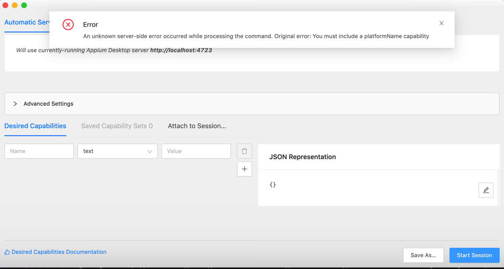
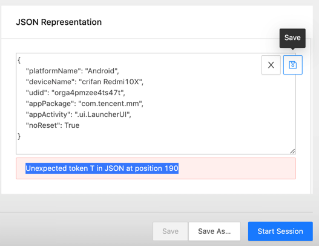
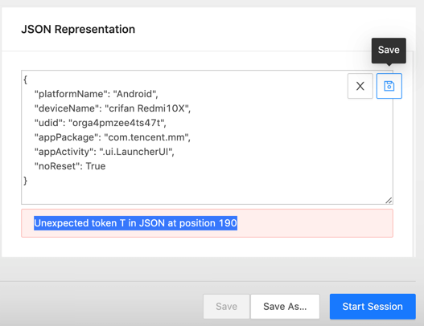
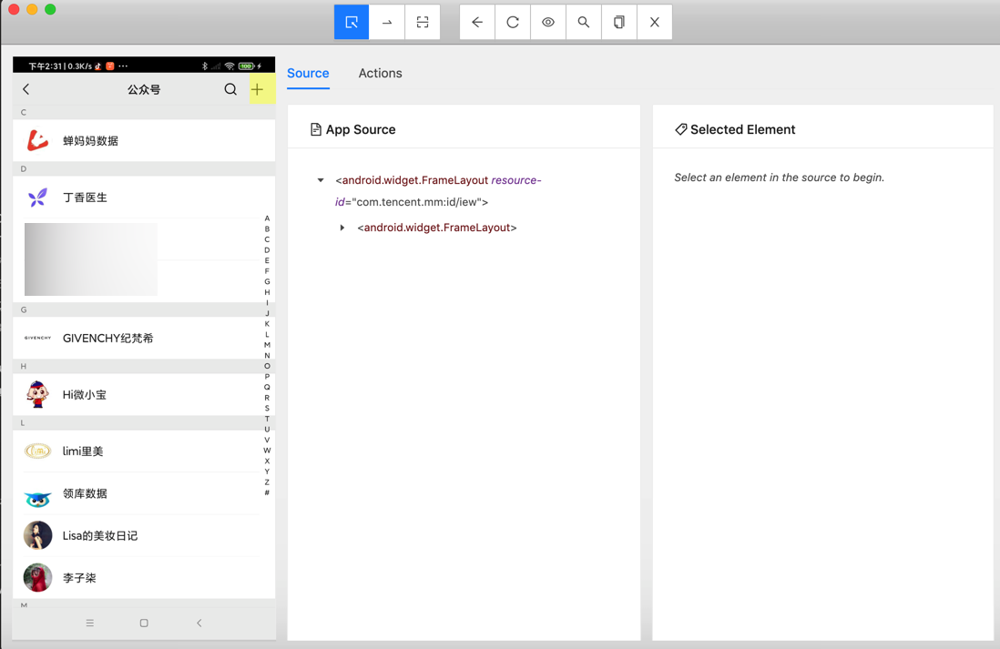
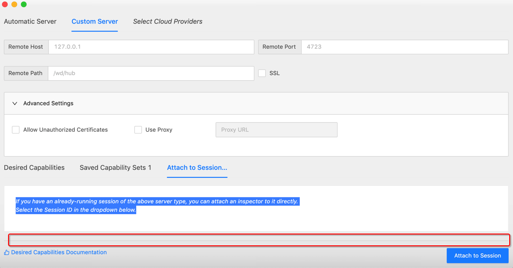
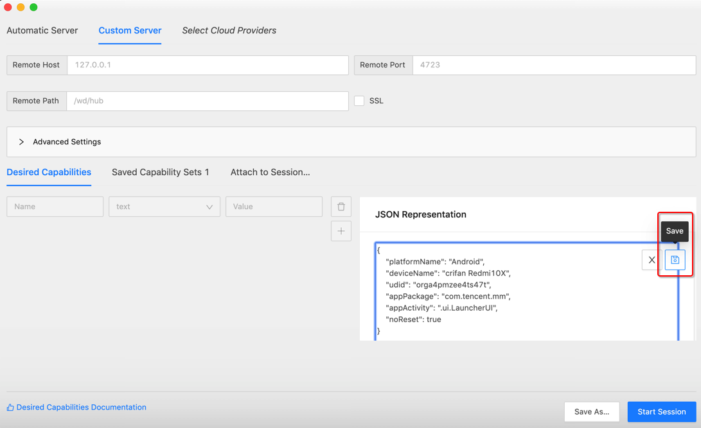

常见问题和心得
此处总结Appium开发期间常遇到的一些问题和一些使用方面的心得和经验：
Original error: Could not find a connected Android device
此处appium启动报错
Original error: Could not find a connected Android device
意思是，连不上，找不到设备。
解决办法：
- 硬件上
- 确保安卓设备正常通过USB数据线连接到了Mac中
adb devices- 可以查看到设备（的udid值）
- 确保安卓设备正常通过USB数据线连接到了Mac中
- 软件上
- 参数配置，最核心的是三个
platformName：Android- 安卓平台
udid：安卓设备的序列号，设备唯一编号- 可以通过
adb devices找到
- 可以通过
- deviceName：随便填个值（当然最好是见名知意用户看得懂的值）
- 比如
"deviceName": "crifan Redmi10X"
- 比如
- 参数配置，最核心的是三个
具体参数解释，详见官网
或：
appium/caps.md at master · appium/appium (github.com)
Original error You must include a platformName capability
背景：已启动了appium的server端.
已用Python代码，加上Capability参数，启动了client端，且成功打开了当前的app：微信
然后希望用appium的GUI图形界面Appium Desktop中点击放大镜🔎 后，出现的调试界面，其中点击Start Session，但是报错：
An unknown server-side error occurred while processing the command.
Original error: You must include a platformName capability

原因：没有填入platformName参数
解决办法：填入参数即可
但要额外说明的是：
- 此处appium的GUI调试界面，要填写的Capability参数，和Python代码中Capability参数，没关系
- 就不会，像我本以为的，appium的server内部，自动填入python代码传递的参数了
- GUI中填写Capability参数时，可以直接一次性写好JSON字符串，放到 JSON Representation中，点击Save，即可自动解析到左边参数列表中
- 注意
- 如果填写的json有错误，会有错误提示的
- 注：GUI窗口要足够大，确保能看到JSON Representation底部的JSON错误提示
- 
- 我开始就是，窗口太小，没看到底部错误提示，而搞不清为何还是报错
- 
- 注：GUI窗口要足够大，确保能看到JSON Representation底部的JSON错误提示
- 如果填写的json有错误，会有错误提示的
- 说明
Save后，记得Save as一下，可以直接加载，避免每次充分输入参数。- 正常
Save后，第二个Tab：Saved Capability Set后面会有个数提示，比如1，2。点击Saved Capability Set，可以看到参数详情。
- 正常
- 注意
附上，此处的参数：
{
"platformName": "Android",
"deviceName": "crifan Redmi10X",
"udid": "orga4pmzee4ts47t",
"appPackage": "com.tencent.mm",
"appActivity": ".ui.LauncherUI",
"noReset": true
}
其中：
- json中，不支持Python中的True，要写成小写的true
Appium Inspector调试连接已存在的session会话
经过后续确认，Appium也是支持调试连接已有session的。
背景是：此处已用Python连接了Appium的Server，已经正在操控安卓手机了，比如点击进去了新的页面。
此时，希望搞清楚新页面中元素细节，以便于写代码定位元素，实现点击元素等后续操作。
希望此处可以用Appium去连接和调试，且同时不要冲突了当前的Python连接。
后续得知，此种需求就叫做：Appium的调试工具Appium Inspector，连接已存在的会话
操作方法：切换到Attach to Sesssion
![appium_inspector_attach_session]
If you have an already-running session of the above server type, you can attach an inspector to it directly.
Select the Session ID in the dropdown below.
然后Appium Inspector会自动检测出当前已有的session，点击切换到你要连接的session，再点击Attach to Sesssion
即可，不影响现有手机中的画面，可以开始调试找元素属性了：

注意：
确保当前Inspector的窗口高度足够高，不要出现我之前遇到的：
Inspector窗口高度太低，比如：

就会导致，上面的 已检测出的session的列表，看不到了。
从而误以为，Appium Inspector不支持连接已有session的功能呢。
Appium保存参数配置
Appium Inspector支持，保存参数，避免每次都要很麻烦的输入参数才能连接设备。
步骤是：
Appium Inspector，在输入和Save了Capability的参数后，点击Save：

后，再切换到Saved Capability Set，且有个后缀数字，此处是1，表示已保存了1个配置：

如此，即可保存配置，以后每次无需再次输入参数，即可，点击选中当前要用的配置，再点击Start Session即可连接设备。